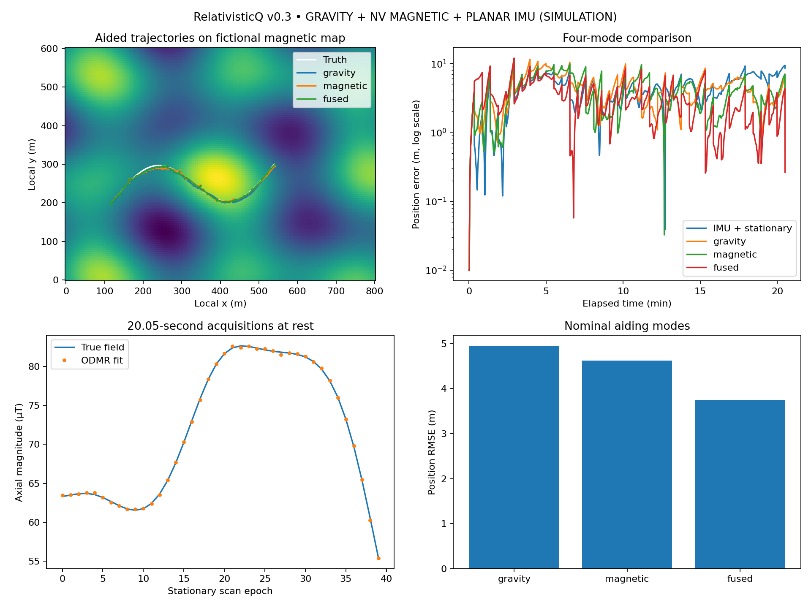

NV sensing connected to the existing gravity v0.7 FusionEKF. Synthetic stop-and-measure route; known fixed sensor axis; Trusted stationary signal provides zero-velocity observations equally to all modes. No hardware performance claim.

| Case | Seed | IMU + stationary RMSE (m) | gravity RMSE (m) | magnetic RMSE (m) | fused RMSE (m) |
|---|---|---|---|---|---|
| nominal | 17 | 4.84 | 4.94 | 4.63 | 3.75 |
| nominal | 3 | 10.01 | 4.42 | 5.30 | 2.97 |
| nominal | 11 | 12.06 | 6.94 | 4.08 | 3.33 |
| nominal | 29 | 7.05 | 6.41 | 4.55 | 3.10 |
| nominal | 47 | 13.98 | 5.45 | 5.64 | 3.20 |
| dropouts | 17 | 4.84 | 4.94 | 5.71 | 3.97 |
| interference | 17 | 4.84 | 4.94 | 5.16 | 3.81 |
| flat_magnetic | 17 | 4.84 | 4.94 | 4.84 | 4.94 |
{
"config": {
"seed": 17,
"waypoints": 40,
"scenario": "nominal",
"dt_s": 0.5,
"stationary_s": 21.0,
"transit_s": 10.0,
"gravity_std": 2.0,
"stationary_aiding": true,
"stationary_velocity_std_mps": 0.03
},
"metrics": {
"ins": {
"rmse_m": 4.836512367463023,
"final_error_m": 8.561667804890316,
"max_error_m": 10.269282082174001,
"gravity_updates": 0,
"magnetic_updates": 0
},
"gravity": {
"rmse_m": 4.938111961502933,
"final_error_m": 1.5163933978536264,
"max_error_m": 11.497607495217247,
"gravity_updates": 40,
"magnetic_updates": 0
},
"magnetic": {
"rmse_m": 4.6279567865405875,
"final_error_m": 3.6047299455406576,
"max_error_m": 11.378083274485927,
"gravity_updates": 0,
"magnetic_updates": 40
},
"fused": {
"rmse_m": 3.7508252869770446,
"final_error_m": 0.26362633896528076,
"max_error_m": 11.93823756511009,
"gravity_updates": 40,
"magnetic_updates": 40
}
},
"duration_s": 1230.0,
"scope": "Synthetic stationary ODMR scans, fixed known axis, local planar acceleration model"
}Retained initial campaign. Several local-filter runs diverged. No recovery or guaranteed global localization is implemented.
| Case | Seed | Fused RMSE (m) |
|---|---|---|
| nominal | 17 | 7.42 |
| nominal | 3 | 45.76 |
| nominal | 11 | 91.02 |
| nominal | 29 | 99.97 |
| nominal | 47 | 11636.64 |
| dropouts | 17 | 2275.52 |
| interference | 17 | 10.13 |
| flat_magnetic | 17 | 9612.07 |